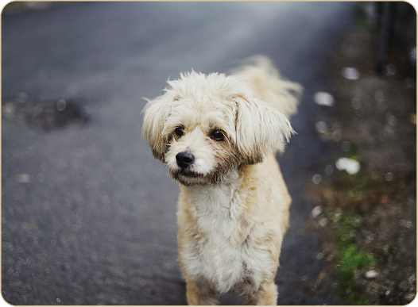

Pets perdidos
Pesquise avistamentos próximos, filtre por status e veja detalhes rapidamente para que as famílias se reencontrem mais cedo.

Central de Buscas e Filtros
Refine sua busca para encontrar animais perdidos com mais facilidade.
Filtros rápidos
Um toque para refinar a busca.
Pets perdidos compatíveis
Navegue pelos cartões e abra os detalhes para ver localização, avistamento e contato.
Nenhum pet encontrado.
Redefina os filtros ou faça uma nova busca.
Detalhes do cartão do pet
O cartão exibe foto, nome, cidade, último local, status e botão “Ver detalhes”.
Dica: entre em contato pelo chat do app. Adicione uma descrição semelhante para
acelerar o reencontro.